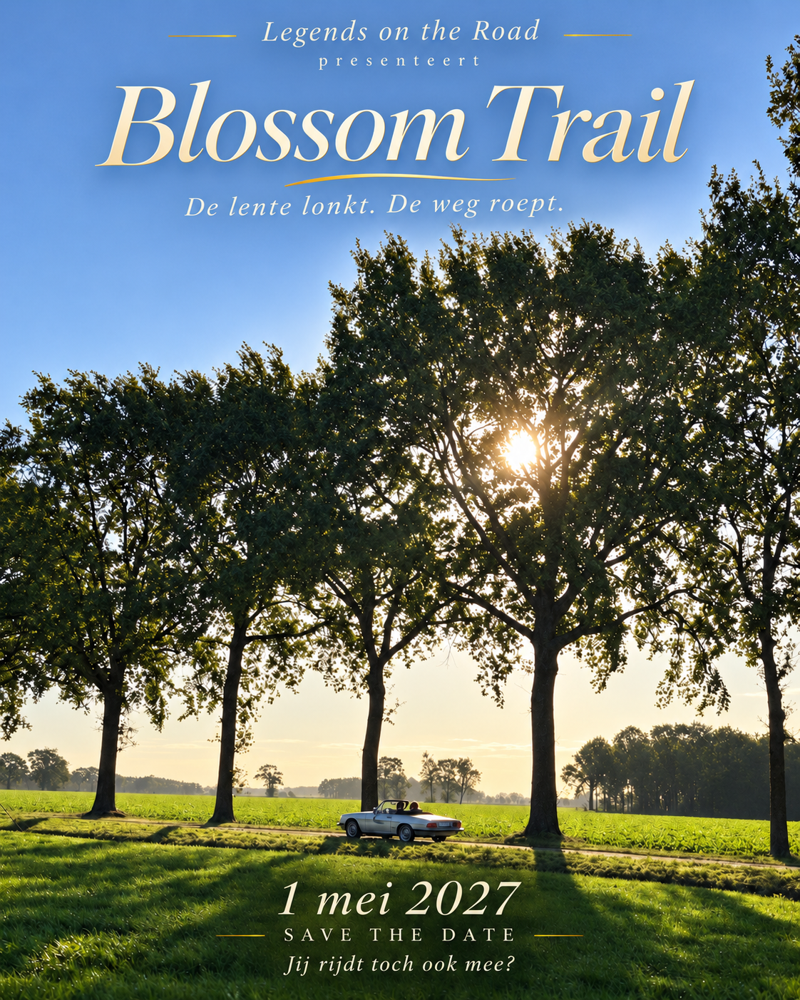

De weg ontdekken.
Even loskomen van de dagelijkse drukte. Achter het stuur van je oldtimer of GT, met alle aandacht voor de route en het landschap.
Voor liefhebbers van oldtimers & GT’s
Een gedeelde passie brengt ons samen.
De weg maakt er een verhaal van.
De volgende bestemming Blossom Trail · 1 mei 2027
Inschrijvingen openen op 1 decemberGeboren uit een gedeelde passie
Legends on the Road is ontstaan uit onze liefde voor bijzondere auto’s, mooie routes en mensen samenbrengen. Die passie delen we graag met jullie.
We trekken eropuit met oldtimers en GT’s, nemen de tijd om te genieten en ontmoeten elkaar onderweg. Van het eerste gesprek bij de start tot het napraten aan tafel: het zijn de momenten samen die een rally onvergetelijk maken.
Cindy & Bart

Een nieuw seizoen. Een nieuw verhaal.
Sommige bestemmingen houden we nog even voor onszelf.
Op 1 mei nemen we je mee in een nieuw hoofdstuk van Legends on the Road. De lente vormt het decor. Waar de weg ons brengt? Dat blijft nog even een verrassing.
Een tipje van de sluier: het wordt een dag die je graag samen beleeft… en waar je nog lang over napraat.
Zet de datum alvast in je agenda.
De inschrijvingen openen op 1 december 2026.
Nieuwsgierig? Binnenkort onthullen we meer…
Drive – Connect – Remember
Even loskomen van de dagelijkse drukte. Achter het stuur van je oldtimer of GT, met alle aandacht voor de route en het landschap.
Bijzondere auto’s brengen mensen samen. Een gesprek bij de start, een nieuwe ontmoeting onderweg en samen genieten aan tafel.
Die ene weg. Die glimlach. Dat verhaal dat blijft hangen. Herinneringen die je mee naar huis neemt, lang nadat de motor stilvalt.
Samen geschreven verhalen
Van onze eerste rit naar Willemstad tot de Golden Leaves Tour.
Ontdek de verhalen van onze vorige rally’s.
Word partner van Legends on the Road
Verbind jouw bedrijf aan bijzondere routes, mooie ontmoetingen en een gedeelde passie voor oldtimers en GT’s. Met de steun van onze sponsors geven we elke rally dat beetje extra.
Wil je mee deel uitmaken van ons verhaal? Vraag ons naar de mogelijkheden in ons sponsordossier. We bekijken graag samen welke samenwerking bij jouw bedrijf past.
Het begint met een ontmoeting
Een vraag over onze rally’s of interesse om partner te worden?
We horen graag van je.
neem contact op via info@legendsontheroad.be